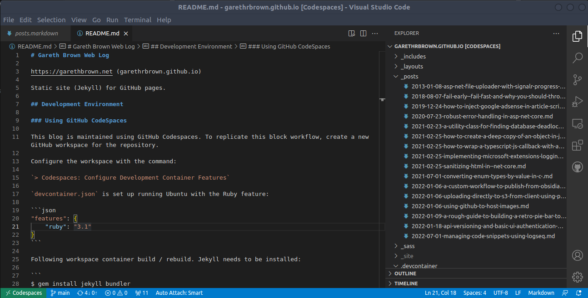

Maintaining a Blog with Jekyll, GitHub Pages and GitHub Codespaces

These are notes copied from the README.md of my public blog (the one you are reading now).
Jekyll and GitHub pages have proven to a be a low friction workflow for curating and publishing posts. Making changes to the blog and debugging before publishing are made easier with this GitHub Codespaces workflow, since the environment now lives in the cloud, and does not need maintaining on PC.
Replicating this Workflow
Assuming an existing GitHub repository, create a new codespace.
Once started, configure the codespace with the command to create the devcontainer.json configuration file:
> Codespaces: Configure Development Container Features
devcontainer.json is set up running Ubuntu with the Ruby feature:
"features": {
"ruby": "3.1"
}
Following codespace container build / rebuild. Jekyll needs to be installed:
$ gem install jekyll bundler
Check with
$ jekyll -v
You will likely need to install gems from Gemfile.lock
$ bundle install
Due to error cannot load such file -- webrick (LoadError), you may need to add the following package. (Ref: https://stackoverflow.com/questions/65617143/cannot-load-such-file-webrick-httputils)
$ bundle add webrick
To create a new blog template, run:
$ jekyll new <path>
Debug
To debug locally run:
$ jekyll serve
Deploy
Simply commit to main branch and push to GitHub. GitHub has adapters for building and deploying.
Git Configuration
Merge strategy configured (defaults to merge):
git config pull.rebase false